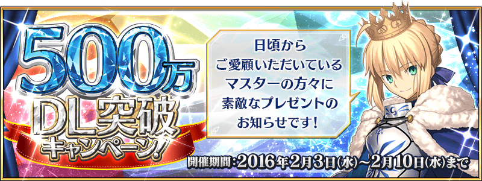
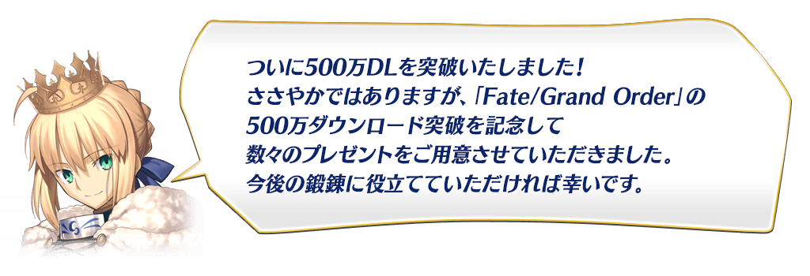
◆宣傳活動開催期間◆
2016年2月3日（三）15:00～2月10日（三）12:59
◆宣傳活動對象者◆
於上記的期間有遊玩Fate/Grand Order的玩家
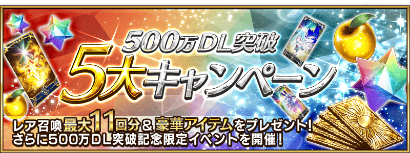
◆「500萬DL記念 舉辦特別登入加成！」◆
對象在期間中每日、合計登入5天的話，最多能GET聖晶石25個（稀有召喚6次份）！
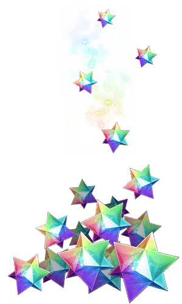
◆宣傳活動舉辦期間◆
2016年2月4日（四）3:00～2月9日（二）2:59
◆宣傳活動對象者◆
領取條件期間中登入Fate/Grand Order的所有玩家
◆贈送內容◆
對象每天贈送聖晶石5個
（最大5天、計25個）
| 登入天數 | 領取期間 |
|---|---|
| 第1天 | 2月4日（四）3:00～2月5日（五）2:59 |
| 第2天 | 2月5日（五）3:00～2月6日（六）2:59 |
| 第3天 | 2月6日（六）3:00～2月7日（日）2:59 |
| 第4天 | 2月7日（日）3:00～2月8日（一）2:59 |
| 第5天 | 2月8日（一）3:00～2月9日（二）2:59 |
※在上記領取期間內登入即為對象。
※領取期間內沒登入的話無法領取禮物。
※禮物各對象日只能領取1次。
◆ 「500萬DL記念 豪華道具贈送給全員！」◆
贈送含呼符5枚（稀有召喚5次份）、5種類的道具各個給遊玩Fate/Grand Order的全部Master！
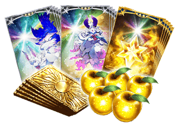
◆禮物配布期間◆
2016年2月4日（四）
AM3:00～7月31日（日）22:59
◆宣傳活動隊象者◆
在禮物配布期間中有遊玩Fate/Grand Order的人
※依照開始遊戲的時機能領取的禮物也不同，2月4日（四）2:59後開始遊戲才能領取全部。
◆禮物配布方法◆
道具會在下列的日程中依次贈送到禮物箱。
| 禮物配布期間 | 禮物内容 |
|---|---|
| 2/4（四）3:00～7月31日（日）22:59 | 經驗值卡★4ALL 5枚 |
| 2/5（五）3:00～7月31日（日）22:59 | フォウくん卡★3ALL HP5枚 |
| 2/6（六）3:00～7月31日（日）22:59 | フォウくん卡★3ALL ATK5枚 |
| 2/7（日）3:00～7月31日（日）22:59 | 黄金の果実5個 |
| 2/8（一）3:00～7月31日（日）22:59 | 呼符5枚 |
◆「500萬DL記念 概念禮裝登場！」◆
在達文西工房以期間限定登場的「500萬DL記念道具交換」中，可以交換★4（SR）概念禮裝「英霊肖像」！
此紀念概念禮裝以Fate/Grand Order的主視覺為主題，從10張的圖案中，只能選喜歡的1張來交換。
※不管哪張圖案性能都相同。
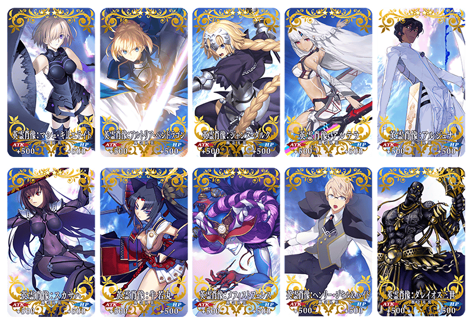
★★★★SR
英霊肖像
ATK 500（最大：500） HP 500（最大：500）
技能
通過任務時獲得的絆增加50
◆宣傳活動舉辦期間◆
2016年2月3日（三）15:00～2月10日（三）12:59
◆交換方法◆
在達文西工房的「500萬DL記念道具交換」中，用マナプリズム做交換。交換後，會送到禮物箱。

◆ 「500萬DL記念 魔術禮裝登場！」◆
紀念500萬DL，以Fate系列女主角阿爾托莉亞・潘德拉剛的私服為形象的魔術禮服以期間限定登場！ 獲得專用任務會在迦爾帝亞之門出現！ 獲得的話能使用新的Master技能。
◆宣傳活動舉辦期間◆
2016年2月3日（三）15:00～2月10日（三）12:59
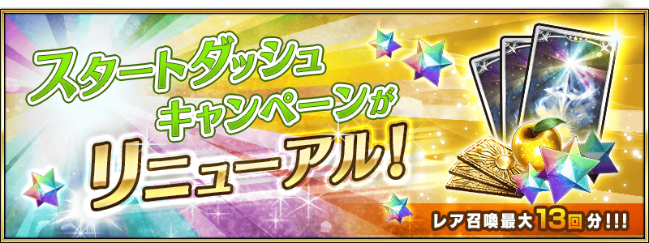
◆「新手起跑宣傳活動翻新！」◆
今後開始遊戲，大幅翻新起跑宣傳活動！
最多除了能得到聖晶石40個（稀有召喚10次份）外，呼符3張（稀有召喚3次份）、經驗值卡、友情點數(召喚70次份)，也能GET黄金の果実（AP回復道具）等！
◆宣傳活動舉辦時間◆
2016年2月4日（四）3:00～
◆領取方法◆
其1．通過任務
通過教學有聖晶石2個、另外通過序章有聖晶石10個！合計GET12個（稀有召喚3次份）！
其2．登入加成
開始遊戲之後，登入7天的話能GET！
登入加成合計：贈送聖晶石28個（稀有召喚7次份）、呼符3枚（稀有召喚3次份）、經驗值卡★3ALL×7枚、友情點數合計14,000pt（召喚70次份）、黄金の果実1個！
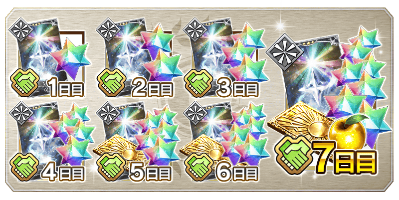
| 登入天數 | 新起跑宣傳活動 |
|---|---|
| 第1天 | 聖晶石1個 友情點數×2,000pt 經驗值卡★3×1枚 |
| 第2天 | 聖晶石2個 友情點數×2,000pt 經驗值卡★3×1枚 |
| 第3天 | 聖晶石3個 友情點數×2,000pt 經驗值卡★3×1枚 |
| 第4天 | 聖晶石4個 友情點數×2,000pt 經驗值卡★3×1枚 |
| 第5天 | 聖晶石5個 友情點數×2,000pt 經驗值卡★3×1枚 呼符×1枚 |
| 第6天 | 聖晶石6個 友情點數×2,000pt 經驗值卡★3×1枚 呼符×1枚 |
| 第7天 | 聖晶石7個 友情點數×2,000pt 經驗值卡★3×1枚 呼符×1枚 黄金の果実×1個 |
◆500萬DL記念召喚期間◆
期間：2016年2月3日(三) 15:00 ～ 2月10日(三) 12:59
以期間限定舉辦 500萬DL記念召喚！
初登場的Servant「★5（SSR）布倫希爾德」以期間限定登場！
「★4（SR）貝奧武夫」、 「★4（SR）芬恩・麥克庫爾」也新登場！
新登場的Servant3位出現率提升！
※布倫希爾德在PickUp召喚期間結束後，不會追加到故事召喚。
還有，新登場的概念禮裝「★5（SSR）聖者の依代」、「★4（SR）千年黄金樹」2張的出現率提升！
另外，★3（R）概念禮裝大幅翻新！
「★3（R）シュトルヒリッター」、「★3（R）魔力計」、「★3（R）愛の霊薬」、「★3（R）柳洞寺」、「★3（R）阿蘭若」、「★3（R）モータード・キュイラッシェ」、「★3（R）ライオンのぬいぐるみ」、「★3（R）ルーの光輪」新登場！
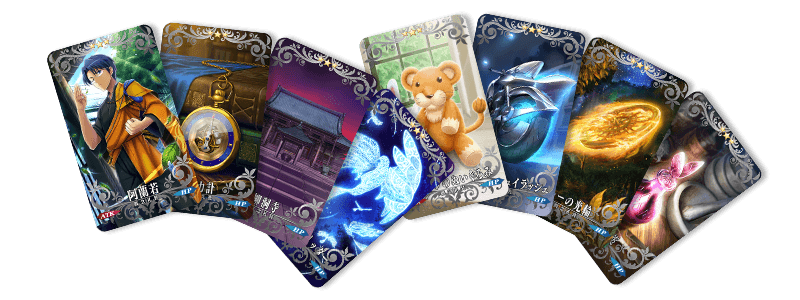
※伴隨著翻新，「★3（R）アゾット剣」「★3（R）偽臣の書」「★3（R）青の黒鍵」「★3（R）緑の黒鍵」「★3（R）赤の黒鍵」「★3（R）凛のペンダント」「★3（R）魔導書」「★3（R）龍脈」「★3（R）魔術鉱石」「★3（R）竜種」將移出聖晶石召喚外。仍可繼續在友情點數召喚獲得。
10次召喚★4(SR)以上1枚確定和★3(R)以上的Servant1位確定！
※★4(SR)以上確定包含Servant和概念禮裝。
迎接初登場Servant「★5（SSR）布倫希爾德」做為支援成員，挑戰期間限定的任務！
別錯過體驗各Servant的技能和寶具的機會！
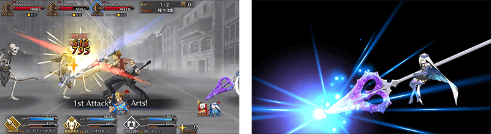
◆布倫希爾德體驗任務舉辦期間◆
期間：2016年2月3日（三）15:00～2月10日（三）12:59
◆任務通過報酬◆
呼符
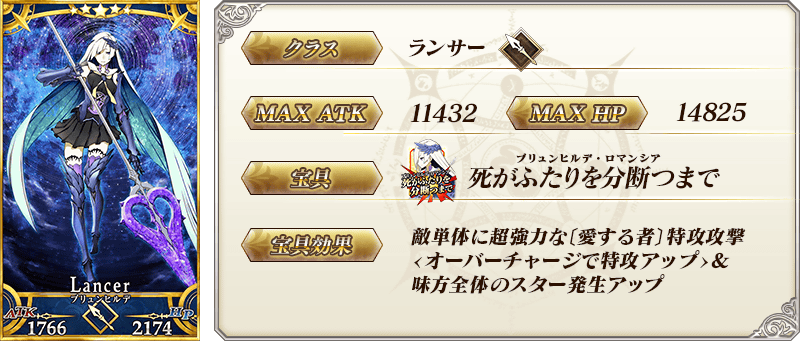

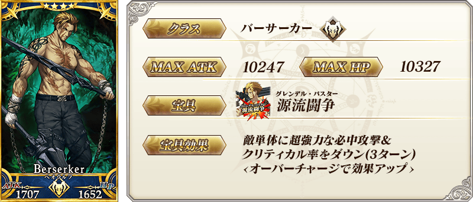
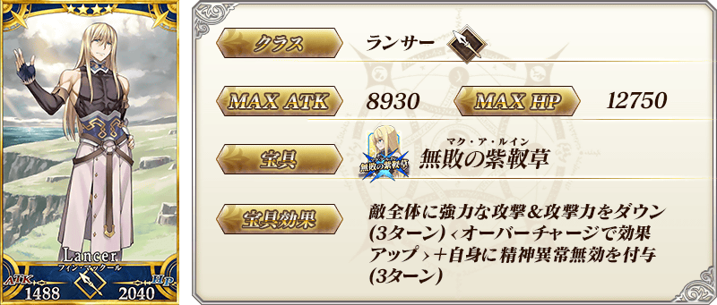
★★★★★SSR
聖者の依代
ATK 250（最大：1000） HP 400（最大：1600）
技能
對自身賦予弱體無效狀態(3次)＆NP獲得量提升15％
★★★★SR
千年黄金樹
ATK 0 HP 600（最大：2250）
技能
每回合對自身賦予最大HP上升效果(每回合200效果提升・最大+3000)
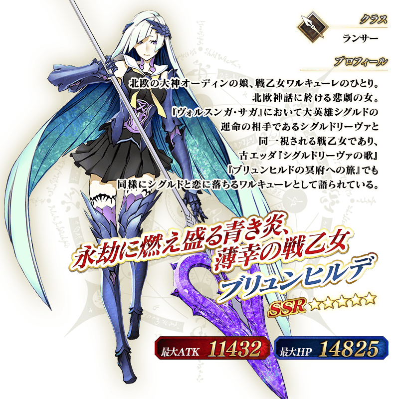